고르는 순간부터,
다시 살펴보는 날까지.
Plantory는 구매 조건과 총액을 비교하고, 새 식물을 받아 관찰한 뒤, 필요한 도움과 경과 확인으로 이어지는 모바일 서비스입니다. 같은 식물의 맥락을 구매·관리·상담 준비·분양까지 이어 씁니다.
일상 관리·수형과 분갈이·공간과 화분·테라리움의 네 영역을 유지합니다. 이 안내서는 PC에서 전체 설계와 역할을 읽는 내부 문서입니다.
하나의 식물로 이어지는 이용 흐름
조건과 총액 비교
같은 규격과 식물 조건 대안을 구분합니다. 배송비·보유품·필요한 양을 확인합니다.
구매 비교 ↔ 준비물 예산받은 상태부터 등록
가상 수령 또는 선물·분양 경로에서 상태와 질문을 정리하고 같은 식물로 등록합니다.
입양 체크 → 내 정원·오늘관찰하고 도움 준비
모르는 상태도 기록합니다. 같은 대상과 이력으로 도움 요청 내용을 미리 봅니다.
관찰 → 도움 요청 미리보기경과와 다음 질문
개인 확인 계획과 변화를 남깁니다. 다시 도움이 필요하면 같은 대상의 요청을 준비합니다.
개인 경과 계획 → 재문의 준비
이미 키우는 식물은 관찰부터 시작합니다. 사례를 읽다가 관찰·도움으로, 내 정원에서 판매·분양·자재 나눔 카드로 이어질 수 있습니다. 가상 수령과 요청 미리보기는 주문·접수·전송이 아닙니다.
네 가지 서비스 영역
영역마다 필요한 도움은 다르지만, 조건 정리·구매·관찰·경과를 같은 흐름으로 연결합니다. 자세한 입력·예외·책임은 서비스 안내 정본의 표에서 확인할 수 있습니다.
일상 식물 관리
이름과 관리법을 모르는 초보자가 별명·장소·재배 방식으로 시작합니다.
등록 → 대상 관찰 → 기록 → 확인·정정
모르는 정보는 그대로 남기고 관찰과 물주기를 구분합니다. 이용자가 관찰하고, 실제 안내는 전문가가 적용 범위를 검토합니다.
이번 개선 시안: 임시 관찰 이력. 가족 공유·알림·장기 저장은 후속입니다.
수형과 분갈이 도움
크기·모양·화분 교체를 고민하는 사람이 대상·목표·최근 변화를 정리합니다.
목표·조건 → 요청 미리보기 → 예산 또는 경과
종류·상태가 불명확하면 작업 방법을 확정하지 않습니다. 실제 전문가는 제공 범위·비용·답변 시간을 정해 제안합니다.
이번 개선 시안: 요청·개인 계획·가상 준비물. 실제 상담·작업 예약은 후속입니다.
공간과 식물·화분 선택
새 조합을 찾는 사람이 빛·공간·규격·취향·예산과 가진 물품을 정리합니다.
환경·보유품 → 조건 비교 → 구매·입양
생육 조건과 취향을 구분하고 모르는 규격은 미확인으로 둡니다. 판매자는 규격을, 운영자는 비교 출처를 확인해야 합니다.
이번 개선 시안: 조건·가상 비교. 실제 가격·재고·실물 적합성은 미검증입니다.
테라리움 제작과 관리
입문자·작품 보유자가 용기·목표·경험·예산에 맞는 방법을 살펴봅니다.
제작 방식 → 준비물 예산·요청 → 용기 관찰
신규 제작과 기존 용기 관리를 구분합니다. 구성·관리 안내와 수업 조건은 공방·전문가가 검토해야 합니다.
이번 개선 시안: 방식·가상 예산. 공방 예약·구성별 전문 안내는 후속입니다.
구매·준비물·소량 거래를 같은 기준으로
품목·조건 → 비교 근거 → 총액·미확인 정보 → 가상 수령 → 입양 체크
- 같은 규격과 식물 조건 대안
- 자재·장비는 모델·규격·구성을 맞춥니다. 식물은 품종·크기·발근·상태·화분 포함 차이를 봅니다. 개인 분양을 모두 중고로 묶지 않고 판매 유형과 생물 상태를 구분합니다.
- 총액과 출처
- 상품·필수 옵션·배송비를 함께 봅니다. 모르는 비용은 0원으로 채우지 않으며 총액 미확인 후보를 확정 최저가로 표시하지 않습니다. 시안의 출처·금액도 가상 예시입니다.
- 분갈이·테라리움 준비물 예산
- 도움에서 목적을 고르고 필수·선택 물품을 살펴봅니다. 이미 가진 물품을 제외하고 판매처별 배송을 합산합니다. 소포장의 용량과 실제 필요한 양을 함께 살펴봅니다.
- 개인 잔량 구매·무료 나눔
- 사용자가 소포장과 함께 포함한 B안입니다. 예시의 잔량·개봉·보관·지역·수령 조건을 보고 질문을 정리해 예산이나 자재 나눔 카드로 연결합니다. 무료 나눔도 수령 비용을 확인합니다.
- 상태 공개형 식물 아웃렛
- 종합 설계로 채택했습니다. 예시 식물의 공개 상태와 관리 부담을 비교하고 질문·가상 입양으로 잇습니다. 낮은 가격은 건강·회복 보장이 아닙니다.
- 비교할 수 없는 경우
- 일치 후보가 없으면 조건을 다시 고릅니다. L·kg은 근거 없이 환산하지 않으며 개봉 자재의 사용 가능성을 자동 판정하지 않습니다. 호가와 실제 거래가는 다릅니다.
판매처별 합배송은 예시 규칙입니다. 실제 가격·옵션·재고·배송·직거래 조건은 제공처 확인이 필요합니다. 네이버·다나와·당근·번개장터·중고나라 연동은 검토 후보이며 현재 자동 연동은 없습니다.
조건 매물 알림·실제 구매 이력·실제 거래·검수·물류는 데이터와 운영 준비 뒤 검토합니다. 시안에서는 외부 판매처 구매나 나눔 신청을 실행하지 않습니다.
공식 자료 확인 범위와 남은 검증입양·경과·사례·인계의 세부 흐름
사용자가 기획에 포함한 네 흐름을 이번 개선 시안에 연결합니다. 각 경로는 현재 창에서 확인하는 개인 초안과 가상 체험입니다.
새 식물 입양 체크
| 누구·시작 정보 | 구입·선물·분양 수령자. 받은 경로·설명·상태. |
|---|---|
| 단계·결과 | 상태·질문 정리 → 별명·장소·재배 방식 → 같은 식물 등록·관찰. |
| 모름·예외 | 이름·설명 없음 허용. 건강 검수·해충 확정·환불 신청으로 처리하지 않음. |
| 운영·단계 | 이용자는 받은 상태, 판매·분양자는 기존 설명 확인. 체크·등록은 이번 시안, 실제 거래 대응은 후속. |
상담·분갈이 후 경과 관리
| 누구·시작 정보 | 작업 이후가 막막한 사람. 대상·확인할 것·다시 볼 시점. |
|---|---|
| 단계·결과 | 개인 계획 → 실제 변화·바꾼 것 → 같은 식물의 재문의 준비. |
| 모름·예외 | 미기록과 변화 없음을 구분. 시안의 개인 계획은 전문가가 안내한 결과가 아님. |
| 운영·단계 | 실제 전문가는 확인 항목·시점·재문의 조건 제시. 개인 기록은 이번 시안, 상담 공급은 후속. |
내 환경과 비슷한 관리 사례
| 누구·시작 정보 | 조언 적용이 어려운 사람. 식물·빛·재배 방식·증상. |
|---|---|
| 단계·결과 | 가상 사례 필터 → 시도·결과·다른 점 → 내 식물의 관찰 또는 도움. |
| 모름·예외 | 사례 없음은 조건 수정. 비슷한 경험을 내 식물의 진단으로 확정하지 않음. |
| 운영·단계 | 운영자가 동의·출처·검토 상태 관리. 가상 사례는 이번 시안, 실제 사례 확보·게시판은 후속. |
판매·분양·자재 나눔 정보 카드
| 누구·시작 정보 | 정보 전달을 반복하는 보유자. 대상·상태·규격·구성·수령 조건, 자재 잔량·개봉·보관. |
|---|---|
| 단계·결과 | 내 정원 또는 자재 조건 → 전달할 내용 작성 → 카드 미리보기·수정. |
| 모름·예외 | 미확인 항목을 숨기지 않음. 개인 메모 일괄 공개·외부 게시·소유권 이전 없음. |
| 운영·단계 | 작성자가 사실 확인, 운영자는 공개·수정·거래 규칙 마련. 미리보기는 이번 시안, 실제 공유·거래는 후속. |
다섯 메뉴, 이어지는 세부 화면
- 오늘
- 대상 선택 → 관찰 → 기록·정정 → 같은 식물의 도움·경과.
- 내 정원
- 등록한 식물과 샘플 구분 → 관찰·입양·판매분양 카드.
- 구매 비교
- 가상 상품·잔량·나눔·아웃렛 조건 비교 → 총액·질문 → 가상 수령·입양.
- 도움
- 기존 가이드와 수형·분갈이·공간·테라리움 조건 → 요청·준비물 예산·개인 경과 계획.
- 사례
- 환경·재배 방식·증상별 가상 사례 → 관찰·도움.
- 세부 화면
- 준비물 예산·입양·경과·정보 카드는 관련 메뉴에서 열립니다. 하단 메뉴를 따로 늘리지 않습니다.
실제 서비스가 운영되는 순서
요청 → 공급자 확인 → 범위·가격·답변 시간 제안 → 고객 수락 → 진행 → 경과·재문의
- 이용자와 운영자: 요청을 분명히
- 이용자가 대상·문제·공유 범위를 선택합니다. 운영자는 필요한 정보와 지원 범위를 확인합니다. 공급자 없음·정보 부족·응답 대기를 구분합니다.
- 전문가·공방: 이행할 조건을 제안
- 분야와 수행 가능성을 확인한 뒤 범위·가격·추가 비용·답변 시간·재문의·취소 조건을 제시합니다. 합의 전에는 예약 확정으로 표시하지 않습니다.
- 고객 선택 뒤 제공
- 수락·거절·변경을 기록하고 합의한 서비스를 진행합니다. 전문가의 안내와 고객이 실제로 한 작업을 구분하며, 제공·완료·운영 시간을 따로 남깁니다.
- 경과와 재문의
- 고객은 변화를, 전문가는 약정 범위의 답변을 남깁니다. 재문의의 비용·기간·응답 시간은 상품 조건으로 정합니다. 무료 재상담·지속 모니터링을 기본 약속으로 두지 않습니다.
전국 온라인 상담과 상품 추천부터 공급을 검토합니다. 현재 확정한 전문가·제휴처·가격은 없습니다. 시안의 요청·개인 계획·재문의는 실제 상담을 제공한 결과가 아닙니다.
조사 근거와 설계 선택
2026년 9월 30일 국내 3개·해외 5개 공개 글 본문과 공식 사이트 2곳의 설명을 확인했습니다. 편의표본이며 수요·문제 발생률이나 실제 기능 성능을 검증한 결과가 아닙니다.
사용자는 입양 체크·경과 관리·사례 찾기·판매분양 카드와 소포장·개인 잔량 구매·나눔 B안을 선택했습니다. 아웃렛은 전체 기획을 맡긴 요청에 따른 설계 판단입니다. 실제 비교 사례·공급자 참여·운영 시간·지불 의사는 여전히 미검증입니다.
사례: 환경·예산·관리 여력 · 2025.07.12 / 판매 사진과 실물 · 2024.01.24 / 상반된 관리 조언 · 2025.07.24. 본문과 댓글의 진단·책임이 확정된 사례는 아닙니다.
조사 원문·상반된 의견·검증할 질문화면으로 보는 이번 개선 시안
2026년 9월 30일 Codex 인앱 브라우저의 390×844px 화면입니다. 가상 상품·식물·개인 입력으로 흐름을 설명하며 실제 참가자·거래·상담 결과가 아닙니다. 각 캡처는 해당 서비스의 특정 상태를 보여줍니다.
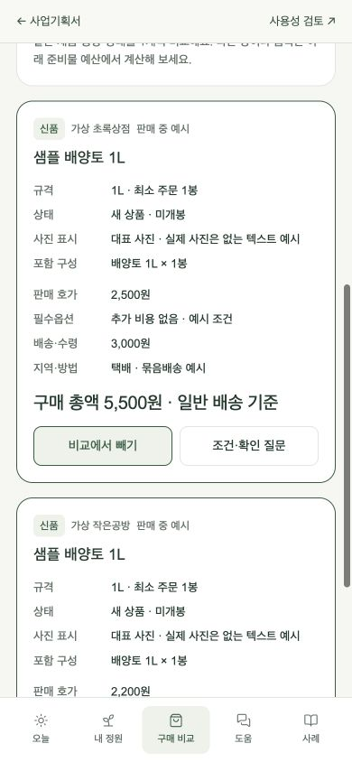
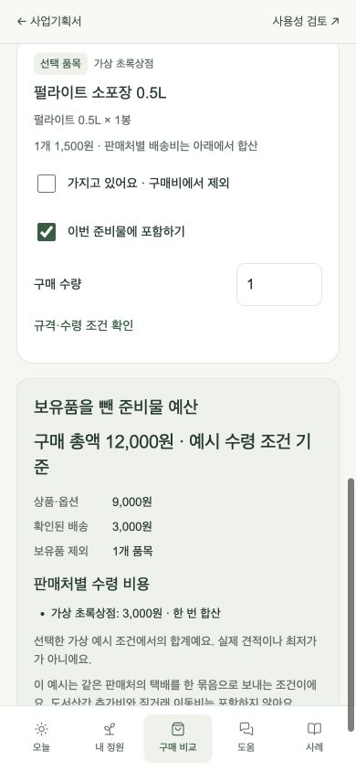
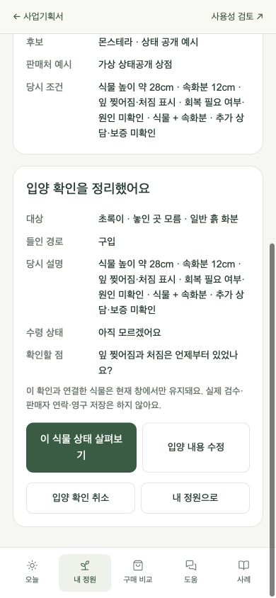
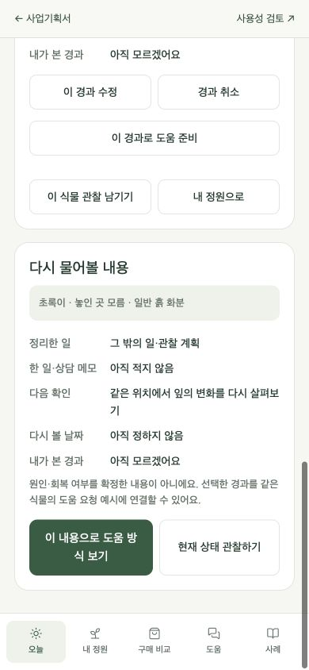
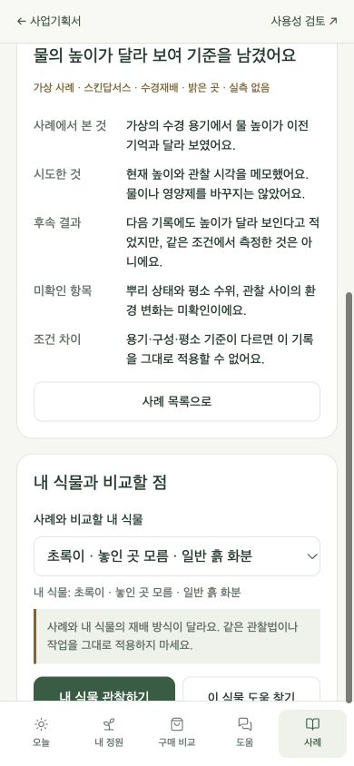
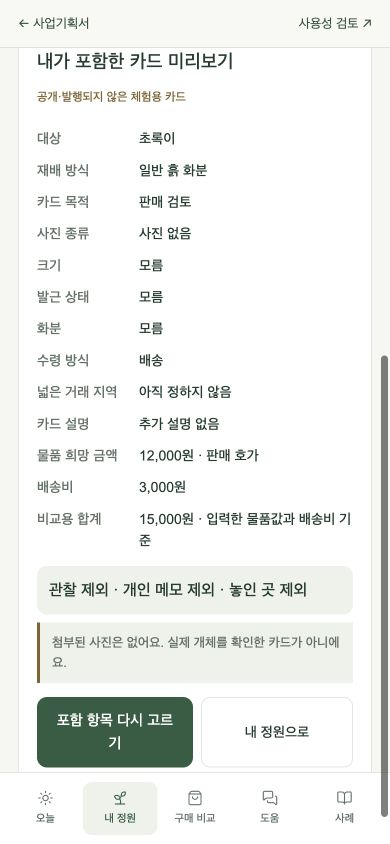
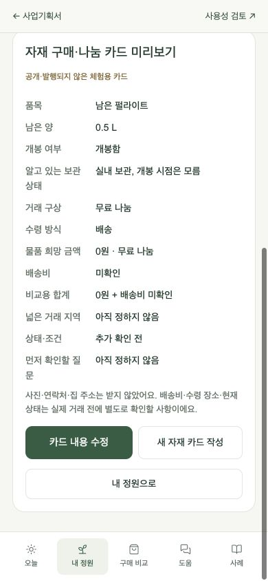
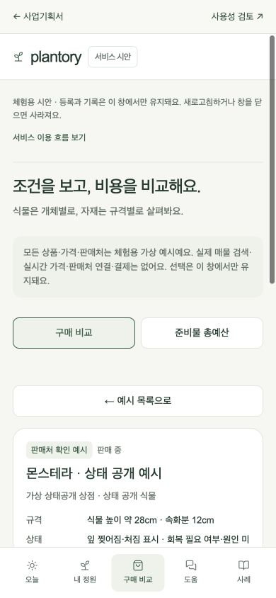
이전 등록·관찰 중심 시안의 화면 4개
같은 날 전체 흐름을 확장하기 전의 기록입니다. 당시의 메뉴 구성과 첫 이용 흐름을 보존합니다.
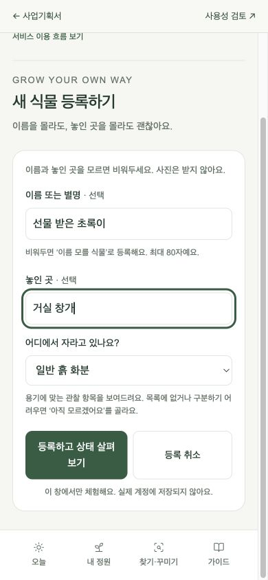
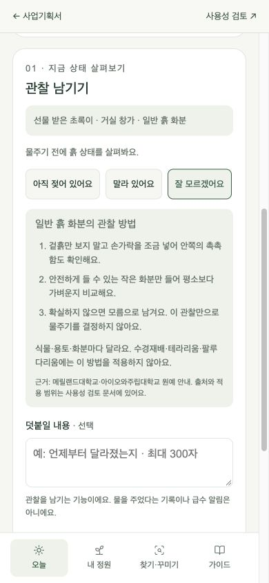
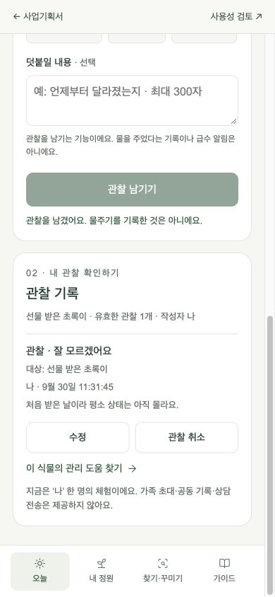
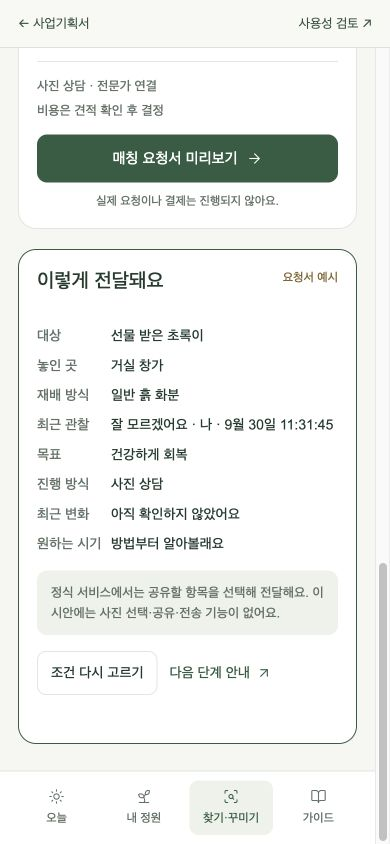
같은 맥락과 분명한 상태
같은 식물을 끝까지 유지
등록한 대상이 오늘·기록·요청·경과·정보 카드까지 이어져야 합니다. 같은 별명인 식물도 장소와 개별 대상을 구분합니다.
모르는 정보로도 시작
사진, 이름, 상태를 모른다고 등록을 막지 않습니다. 대상 종류가 불확실하면 특정 재배 방식의 안내를 바로 적용하지 않습니다.
선택을 되돌릴 수 있게
입력 취소, 메뉴 왕복, 관찰 수정·취소를 지원합니다. 과거 기록은 현재 상태와 구분해서 보여줍니다.
전문가의 역할을 분명히
운영자는 요청 정보를 정리하고 연결을 조율합니다. 전문가가 안내 범위와 제공 조건을 확인합니다. 자동 진단이나 식물의 회복 결과를 보장하지 않습니다.
시안 완성 뒤 유지할 외부 검토 계획
현재 우선 작업은 전체 기획과 연결 시안의 완성도를 높이는 것입니다. 실제 브라우저 확인은 확인 기록에 남기고, 사용자 조사와 구분합니다.
초보 지인 2~3명 후보에게 비용 없이 첫 사용 후기를 부탁할 계획입니다. 안내문을 보고 혼자 시안을 사용한 뒤, 메신저로 같은 질문 5개에 답하는 방식을 선택했습니다.
첫 과업은 이름 모를 식물 등록 → 모름 안내 → 첫 관찰 → 기록 확인·수정입니다. 공통 질문은 아래 경험에서 막힌 위치와 이유를 돌아볼 수 있도록 공유 안내문에 정리합니다.
- 이름·사진 없이 시작하는 방법을 찾는가?
- 관찰과 물주기를 구분하는가?
- 어느 식물에 어떤 기록을 남겼는지 확인하는가?
- 잘못된 기록을 수정하거나 취소하는가?
공유할 시안과 안내문이 준비되면 이번 주(2026-09-30 대화 기준)에 부탁할 계획입니다. 후보가 있는 단계이며 참여 수락·일정 확정·공유는 아직 이루어지지 않았습니다. 혼자 사용한 뒤 받는 후기이므로 실제 조작을 직접 관찰한 결과와 구분하며, 유료 수요 검증으로 해석하지 않습니다.